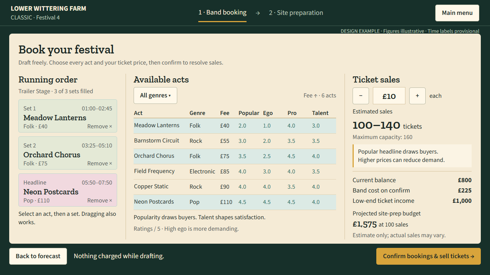
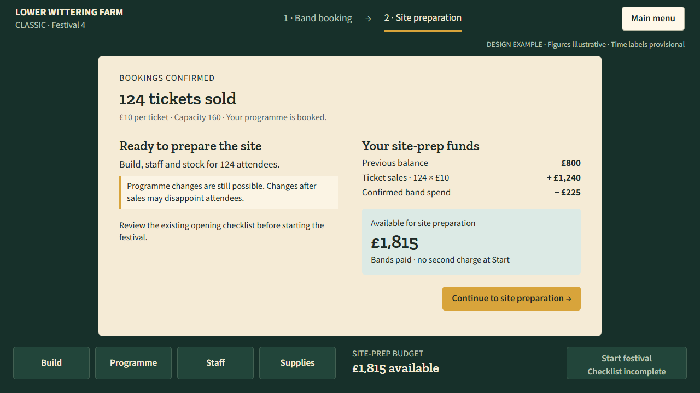
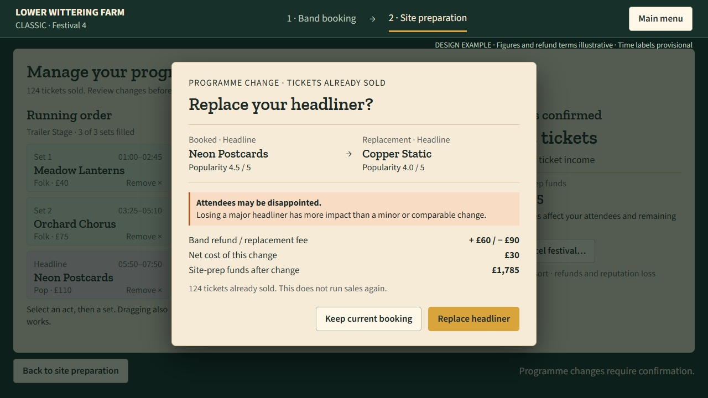

Three design states for coordinator review and implementation handoff. All figures and refund terms are illustrative. Native UI; no new artwork required.
Runtime handoff · Visual prototype · Booking at1080p


